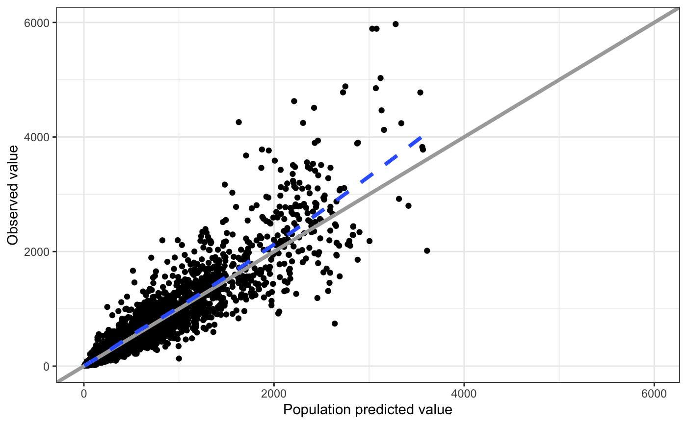
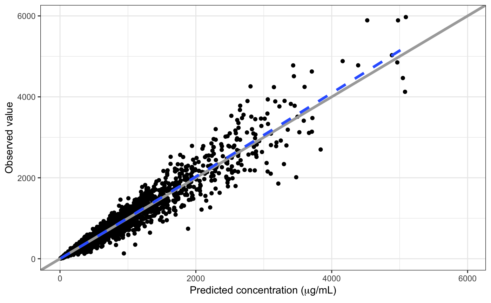
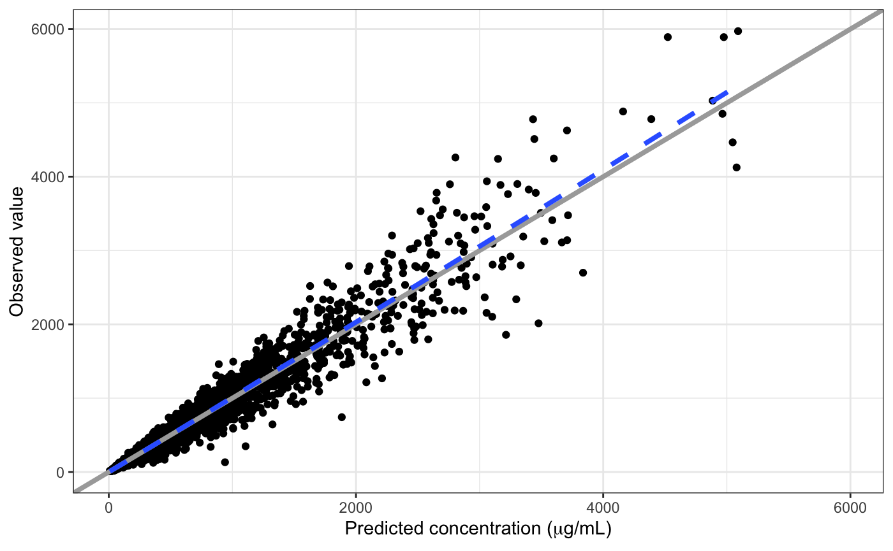

Customizing Plots
Kyle Baron
2018-11-02
customize.RmdSet up
library(pmplots)
library(dplyr)
data <- pmplots_data_obs()A default plot
dv_pred(data)
Add Greek symbols to an axis label
There are a couple of ways to do this. The easiest is to have the latex2exp package installed and write the TeX right in the label.
dv_pred(data, x = "IPRED//Predicted concentration ($\\mu$g/mL)")
Otherwise, you can trigger R plotmath by putting !! at the start of the column label
dv_pred(data, x = "IPRED//!!'Predicted concentration (' * mu * 'g/mL)'")